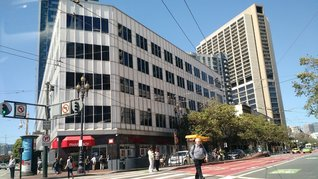

News
About
Facebook
Twitter
Politics is what happens when people stay up past their bedtime.
Latest News
Oakland Delays 416 Units in Chinatown
Aug 4, 2016

Aaron Peskin's Art of No Deal
Aug 2, 2016
Rents Begin Declining in Some Bay Area Cities
Aug 2, 2016
San Jose Eliminates Mortgage Interest Loophole in Rent Control
Aug 2, 2016
Local Profiles: Golden Chai
Aug 1, 2016
South San Francisco Urges Housing Development Near Railroad
Aug 1, 2016
more...